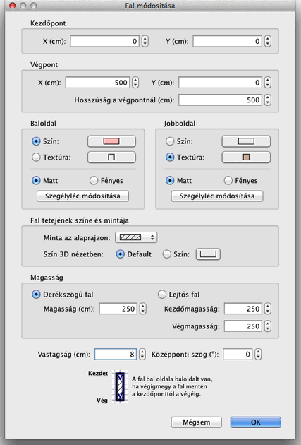

| Falak szerkesztése | |||
Az otthon falainak hosszát és helyét módosíthatja az egérrel, vagy az Alaprajz > Falak módosítása... menüben. Ha egy fal van kijelölve az alaprajzon, megváltoztathatja annak kezdõ- vagy végpontját a fal mindkét végén megjelenõ méretindikátor segítségével.
|

|
Ha az egérmutató a kezdõ- vagy végpont fölött van, megváltozik, így mutatja hogy Húzd és ejtsd módszerrel
elmozdíthatja az adott pontot. Amíg nyomvatartja az egérgombot, a súgóbuborékban láthatja a fal hosszát.
Egy fal szerkeszthetõ az alábbi panel segítségével, amely megjeleníthetõ a falon kettõs kattintással, vagy a fal kijelölése után a Alaprajz > Falak módosítása... menübõl.  A fal panelen megváltoztathatja a kezdõ- és végpontok koordinátáit, a jobb- és baloldai textúrák színét,
a fal vastagságát és magasságát.
|
|